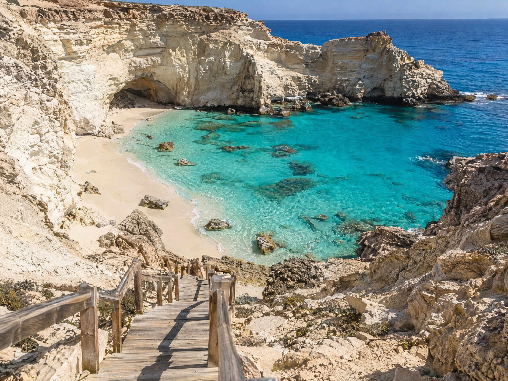
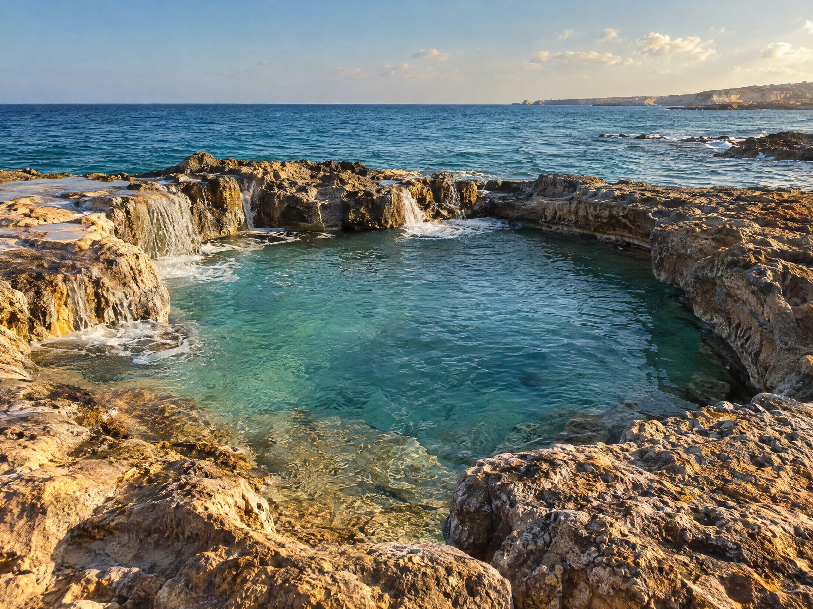

Top Landmarks
Discover the striking natural wonders and historic rock formations along the coastline.[cite: 2]

1. Ageeba Beach
Renowned for its striking cliffside setting and crystal-clear turquoise waters[cite: 2]. Located about 24 kilometers west of the city center, its name translates to "Miracle Beach."[cite: 2]
- Dramatic cove enclosed by carved limestone cliffs and natural rock formations.[cite: 2]
- Scenic clifftop viewpoint overlooking the Mediterranean Sea.[cite: 2]
- Reached via a wooden staircase descending down to the shore.[cite: 2]

2. Cleopatra Bath
A historic landmark steeped in myth and folklore, located on a rocky outcrop extending into the Mediterranean Sea.[cite: 2]
- Associated with accounts of Queen Cleopatra and Mark Antony.[cite: 2]
- Stone pool where seawater rushes through natural rock channels.[cite: 2]
- Provides striking panoramic views of the coast.[cite: 2]
3. Rommel's Cave Museum
A unique historical landmark carved directly into the rock overlooking the bay, serving as a significant World War II site.[cite: 2]
- Used by German Field Marshal Erwin Rommel as a command headquarters.[cite: 2]
- Houses military memorabilia, maps, and historical artifacts.[cite: 2]
- Combines military history with dramatic coastal cave architecture.[cite: 2]
Timeline of Matrouh
From an ancient Mediterranean gateway to a world-renowned summer destination.[cite: 1]
1. Ancient Egypt - The Western Gateway
Matrouh's coast connected Egypt with Libya and the Mediterranean world[cite: 1]. Used for travel, trade, and military movement[cite: 1].
2. Greek & Roman Era - Paraetonium
Called Paraetonium by the Greeks, it became an important port and strategic Roman coastal settlement[cite: 1].
3. Early Islamic Period
Remained a vital coastal stopping point connecting local communities to wider trade networks[cite: 1].
4. World War II - The Desert War
Served as a key strategic military base during the North African Campaign for British and Commonwealth forces[cite: 1].
5. Modern Matrouh
Developed into one of Egypt's best-known summer destinations with white sand and clear turquoise water[cite: 1].
6. Today: History to Holiday
Combines ancient history, Bedouin culture, WWII heritage, desert landscapes, and coastal tourism[cite: 1, 2].
Cultural Heritage
Deeply rooted in nomadic and coastal traditions of the local Bedouin tribes (Awlad Ali)[cite: 3].
Bedouin Folklore & Oral Tradition
Poetry, songs, and storytelling preserve history and genealogy, accompanied by instruments like the simsimiyya or rababa[cite: 3].
Traditional Crafts & Weaving
Tent-making and geometric wool weaving pass down generations to create distinct rugs, cushions, and items with desert motifs[cite: 3].
Customary Law (Orf)
Customary tribal law and elder councils resolve disputes, manage water wells, grazing lands, and govern celebrations[cite: 3].
Gastronomy & Hospitality
Dishes like Merdouma (pit-cooked meat) and Bedouin green tea over charcoal highlight hospitality rituals[cite: 3].